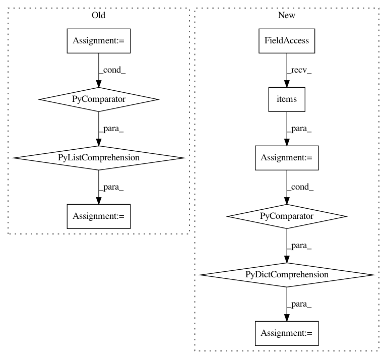

16d2eb3061f1bed8ade390c5e2a2c1de9daa3509,theanolm/optimizers/basicoptimizer.py,BasicOptimizer,__init__,#BasicOptimizer#Any#Any#Any#,16
Before Change
if "max_gradient_norm" in optimization_options:
max_norm = optimization_options["max_gradient_norm"]
epsilon = optimization_options["epsilon"]
squares = [tensor.sqr(gradient) for gradient in gradients]
sums = [tensor.sum(square) for square in squares]
total_sum = sum(sums) // sum over parameter variables
norm = tensor.sqrt(total_sum)
target_norm = tensor.clip(norm, 0.0, max_norm)
gradients = [gradient * target_norm / (epsilon + norm)
for gradient in gradients]
self._gradient_exprs = gradients
self.gradient_update_function = \
theano.function([self.network.minibatch_input,
After Change
self.network = network
// Create Theano shared variables from the initial parameter values.
self.params = {name: theano.shared(value, name)
for name, value in self.param_init_values.items()}
// numerical stability / smoothing term to prevent divide-by-zero
if not "epsilon" in optimization_options:
raise ValueError("Epsilon is not given in optimization options.")
In pattern: SUPERPATTERN
Frequency: 3
Non-data size: 10
Instances
Project Name: senarvi/theanolm
Commit Name: 16d2eb3061f1bed8ade390c5e2a2c1de9daa3509
Time: 2015-12-04
Author: seppo.git@marjaniemi.com
File Name: theanolm/optimizers/basicoptimizer.py
Class Name: BasicOptimizer
Method Name: __init__
Project Name: arogozhnikov/einops
Commit Name: 3244bdf76f1a7aafff39df990913946d565e790f
Time: 2020-05-22
Author: iamfullofspam@gmail.com
File Name: einops/einops.py
Class Name: TransformRecipe
Method Name: reconstruct_from_shape
Project Name: arogozhnikov/einops
Commit Name: e89370c2cf1ef9c7f97246b7cfc1de2c73c8c565
Time: 2020-05-23
Author: iamfullofspam@gmail.com
File Name: einops/einops.py
Class Name: TransformRecipe
Method Name: reconstruct_from_shape